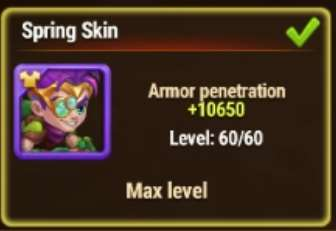
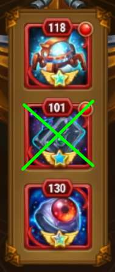

🍕 OSH 팀의 5가지 가장 큰 실수 🍕
| 함께 살펴봅시다 |
|---|
|
실수 1: 코르넬리우스 무기 유물
코르넬리우스의 첫 번째 유물은 활성화 시
팀 전체에 마법 방어력을 제공합니다. 이는 아이작이 궁극기를 충전하는 것을 방해합니다. 공격 시퀀스를 수행하는 데 필요한 시간이 크게 줄어듭니다. 결과적으로 성공 가능성도 크게 줄어듭니다. 
|
|
실수 2: 아이작의 첫 번째 유물
아이작의 첫 번째 유물은 정확한 값을 가져야 합니다.
이 유물은 팀 전체에 방어구 관통력을 제공합니다. 이 유물은 충전하기 위해 마법 공격을 받아야 합니다. 마법 공격은 OSH 구체에서 나옵니다. 방어구 관통력이 너무 높거나 잘못된 레벨이면, 코르넬리우스와 같은 다른 영웅들은 OSH에게 올바른 양의 피해를 줄 수 없을 것입니다. 2025년 5월 현재 이 유물의 최적 값은 114입니다. 이 수준 이상으로 올리는 것은 상황을 악화시킬 수 있습니다. 하지만 118-120 레벨까지는 많은 경우 문제가 발생하지 않습니다. 
|
|
실수 3: 아이작 봄 스킨
아이작의 봄 스킨은 아이작의 방어구 관통력을 증가시킵니다.

이는 재충전 구체를 너무 일찍 파괴할 위험을 증가시키기 때문에 단점입니다. 첫 번째 유물보다도 더 나쁩니다. 다른 영웅들에게 어떤 능력치도 제공하지 않기 때문입니다. |
|
실수 4: 아이작의 두 번째 유물
아이작의 두 번째 유물은 물리 공격력과 방어구 관통력을 증가시킵니다.

공격력 증가는 긍정적일 수도 있지만, 방어구 관통력은 이전 지점에서 설명한 이유로 매우 해롭습니다. |
|
실수 5: 아이작의 달 스킨
아이작의 달 스킨은 영웅의 마법 방어력을 증가시킵니다.
많은 경우 허용 가능한 값 내에 있을 수 있습니다. 그래도 업그레이드하지 않는 것을 권장합니다. 마법 피해는 아이작이 충전하는 데 사용됩니다. 
궁금한 점이 있다면
최고의 OSH 길드원에게 도움을 요청하세요 🤓 |